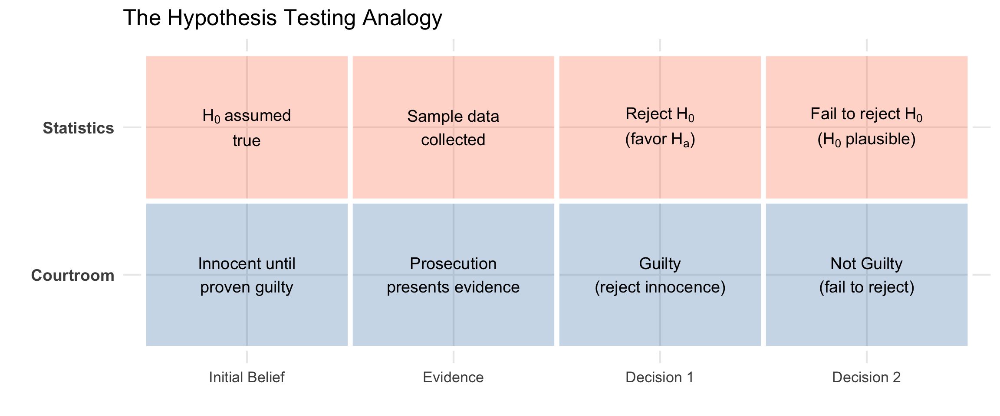

Code
# Create a visual comparison with plain text that renders reliably
trial_data <- tibble(
Category = rep(c("Courtroom", "Statistics"), each = 4),
Element = rep(c("Initial Belief", "Evidence", "Decision 1", "Decision 2"), 2),
x_pos = rep(1:4, 2),
y_pos = c(rep(1, 4), rep(2, 4))
)
# Base plot with tiles
p <- trial_data |>
mutate(Element = factor(Element, levels = c("Initial Belief", "Evidence", "Decision 1", "Decision 2"))) |>
ggplot(aes(x = Element, y = Category)) +
geom_tile(aes(fill = Category), alpha = 0.3, color = "white", linewidth = 2) +
scale_fill_manual(values = c("Courtroom" = "steelblue", "Statistics" = "coral")) +
labs(title = "The Hypothesis Testing Analogy", x = "", y = "") +
theme_minimal(base_size = 16) +
theme(legend.position = "none",
axis.text.y = element_text(face = "bold", size = 14))
# Add courtroom labels (plain text)
p <- p +
annotate("text", x = 1, y = 1, label = "Innocent until\nproven guilty", size = 5) +
annotate("text", x = 2, y = 1, label = "Prosecution\npresents evidence", size = 5) +
annotate("text", x = 3, y = 1, label = "Guilty\n(reject innocence)", size = 5) +
annotate("text", x = 4, y = 1, label = "Not Guilty\n(fail to reject)", size = 5)
# Add statistics labels using expression() for proper subscripts
p <- p +
annotate("text", x = 1, y = 2, size = 5, parse = TRUE,
label = 'atop(H[0]~"assumed", "true")') +
annotate("text", x = 2, y = 2, label = "Sample data\ncollected", size = 5) +
annotate("text", x = 3, y = 2, size = 5, parse = TRUE,
label = 'atop("Reject"~H[0], "(favor"~H[a]*")")') +
annotate("text", x = 4, y = 2, size = 5, parse = TRUE,
label = 'atop("Fail to reject"~H[0], "("*H[0]~"plausible)")')
p